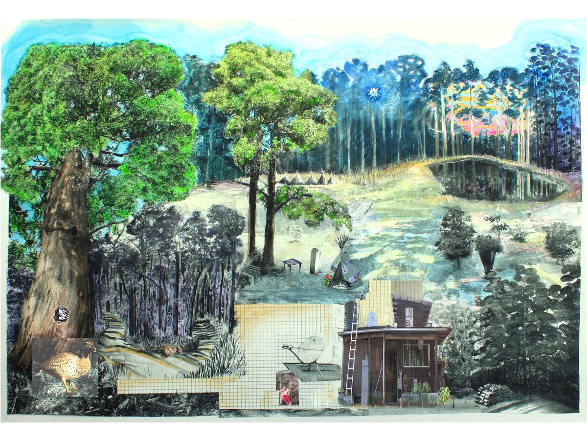
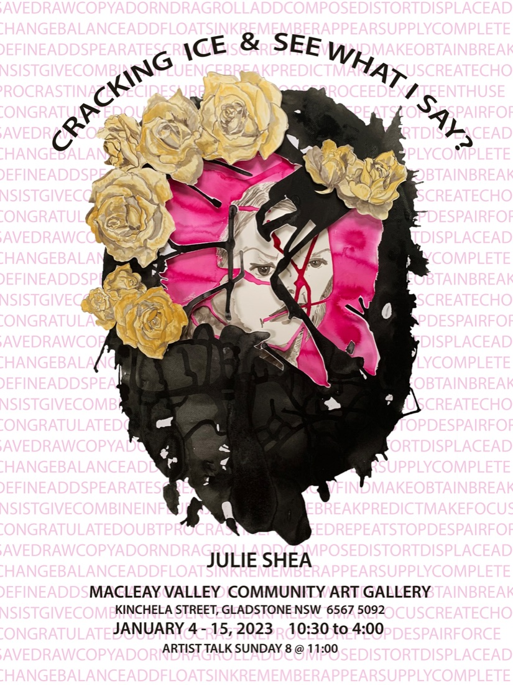
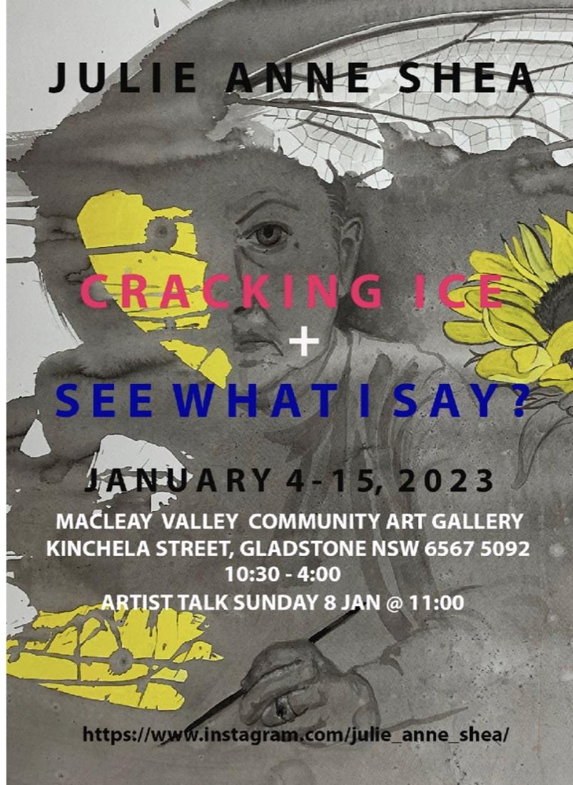
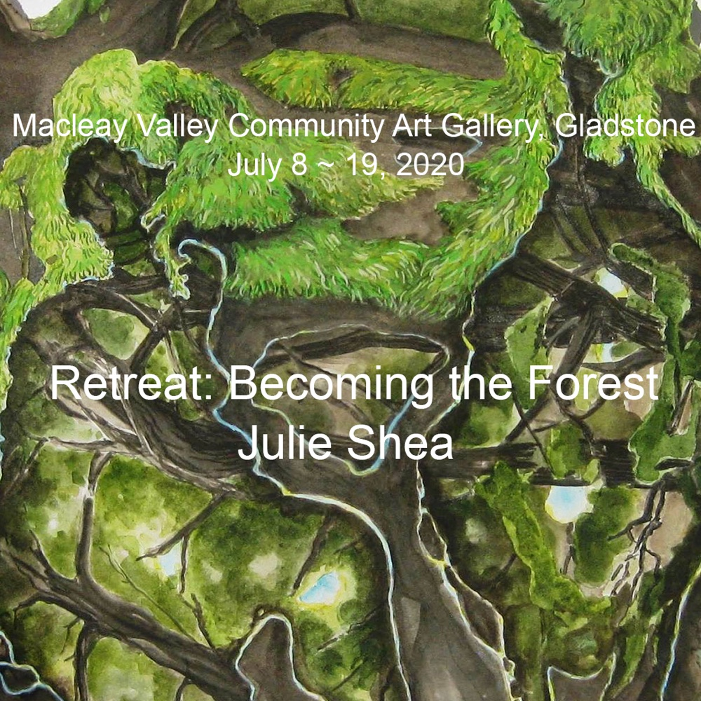

Projects
More projects will be added over time.

Earlier Work — Previous Website
My website made in 2013 as a container for various artworks — 2D, 3D and video work from earlier years.

Bathe In Bright
14–24 November 2024 — Macleay Valley Community Art Gallery. An exhibition of collaged inks sharing a dreamed utopia, and the disruption of that vision by a recurring worming memory.

Cracking Ice
January 4–15, 2023 — Macleay Valley Community Art Gallery. Traditional drawing, Dada techniques, sporadic accidents, collages and apophenia used to escape “creative freeze”.

See What I Say?
January 4–15, 2023 — Macleay Valley Community Art Gallery. Pareidolia and apophenia: finding meaningful images in random ink stains, splashes and chaotic backgrounds.

Retreat: Becoming the Forest
July 8–19, 2020 — Macleay Valley Community Art Gallery. Watercolour and gouache artworks of the forest reflected in creek pools, ponds and bush track puddles; the landscapes anthropomorphise as the artist withdraws to merge with her forest home.